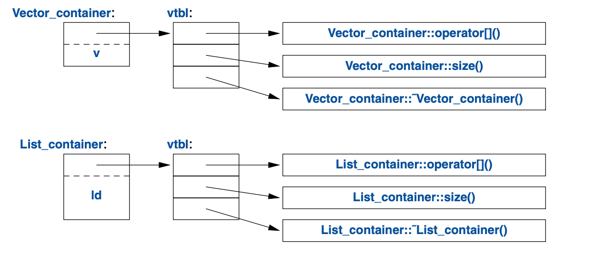

4
类
那些类型并不“抽象”，
它们跟
int和float一样真实。—— 道格·麦克罗伊
4.1 导言
本章及后续三章在避免牵涉过多细节的情况下，阐述了C++对抽象和资源管理的支持：
- 本章简略地介绍定义及使用新类型（用户定义类型）的方式。 具体而言，介绍了定义和使用实体类（concrete class）、 抽象类（abstract class）和类层次（class hierarchy） 要用到的基本属性、实现技术及语言构造。
- 第5章介绍C++明确定义了意义的操作，比如构造函数、析构函数和赋值。 勾勒出一个规则——把这些规则综合运用以控制对象生命周期， 并且支持简洁、高效且完善的资源管理。
- 第6章介绍模板，一种利用（其它）类型和算法把类型和算法参数化的机制。 以函数表示的施加在用户定义类型和内置类型之上的运算，有时会泛化为 模板函数（template function）和函数对象（function object）。
- 第7章是泛型编程底层的概念、技术及语言特性的概览。 着重于概束（concept）的定义和使用，从而精确地给出模板的接口并指导设计。 可变参数模板（variadic template） 的问世是为了阐释最通用同时也最灵活的接口。
这语言构造被用来支持名为 面向对象编程（object-oriented programming）和 泛型编程（generic programming）的编程风格。 随后的第8-15章给出标准库的示例及应用。
C++的主要语言构造是类（class）。类是用户定义类型，在程序代码中代表某个概念。 每当程序的设计中出现一个概念、构想或实体等，我们就试图用一个类去代表它， 使其在代码里具象化，而不仅仅存在于脑子、设计文档或注释里。 借助一套精选的类构建的应用程序，远比直接用内置类型来得容易理解和靠谱。 特别是，程序库通常以类的形式呈现。
除类基本类型、运算符和语句之外的所有语言构造， 从本质上讲都是用来辅助定义更好的类以及更便捷地使用它们。 “更好”的意思是更准确、更易于维护、更高效、更优雅、更顺手、更具可读性、更符合直觉。 多数编程技术有赖于特定种类的类的设计和实现。程序员的需求和品味天差地别。 因此对类的支援近乎广阔无边。此处仅介绍对三种重要的类提供的支持：
- 实体类(§4.2)
- 抽象类(§4.3)
- 类层次中的类(§4.2)
浩如烟海的实用的类都可以被归为其中某一种。 还有更多的类是它们的细微变种或者用它们组合出来的。
4.2 实体类型
实体类（concrete class）的基本思想是：它们的表现“恰如内置类型一样”。
例如：复数类和无限精度的整数类都非常类似于内置的int，
当然，它们各自特色的语意和运算除外。
与之类似，vector和string都类似于内置的数组，
但却能青出于蓝(§9.2, §10.3, §11.2)。
实体类型在定义方面的特征是：它的表征数据（representation）1位于定义之中。
在许多重要的案例中，比如vector，
其表征数据是一个或多个指针——指向存储在别处的数据，
但其表征数据却出现在实体类的每个对象之中。
这使得具体的对象在运行时间和存储空间方面都效率上佳。
具体来说，它允许我们：
- 把实体类型的对象放在栈上、静态分配的内存里以及其它对象中(§1.5)；
- 直接使用该对象（而不必借助指针或引用）；
- （定义后）立即并且完整地初始化对象（即利用构造函数；§2.3），以及
- 复制或转移对象(§5.2)。
表征数据可以是私有的（像Vector的情形；§2.3）
并且仅允许通过成员函数访问，但它的存在是毫无疑问的。
因此，一旦表征数据有任何实质性的变动，用户就必须重新编译。
这是让实体类型跟内置类型行为一致的必要代价。
对于变动不频繁的类型，并且局部变量给出了关键的明确性和高效性的情况下，
这种重新编译是可接受的，而且通常都比较理想。
为增强灵活性，实体类型可以把其表征数据的绝大部分放在自由存储区（动态内存，堆）里，
并通过放置在类对象内的部分进行存取。
vector和string就是这样实现的；
它们可以被视为具有精心打造接口的资源操控器（resource handle）。
4.2.1 算术类型
“经典的用户定义算术类型”是complex：
class complex {
double re, im; // 表征数据：两个double
public:
complex(double r, double i) :re{r}, im{i} {} // 用两个标量构造complex
complex(double r) :re{r}, im{0} {} // 用一个标量构造complex
complex() :re{0}, im{0} {} // complex的默认值：{0,0}
double real() const { return re; }
void real(double d) { re=d; }
double imag() const { return im; }
void imag(double d) { im=d; }
complex& operator+=(complex z)
{
re+=z.re; // 加至re和im
im+=z.im;
return *this; // 返回结果
}
complex& operator-=(complex z)
{
re-=z.re;
im-=z.im;
return *this;
}
complex& operator*=(complex); // 定义在类外某处
complex& operator/=(complex); // 定义在类外某处
};
这是个略微简化版本的标准库complex(§14.4)。
类定义本身仅包含特定运算——那些需要访问表征数据的。
表征数据是简单且常规的。
由于实用性原因，它必须兼容 Fortran 60年前定义的版本，所以需要一套常规运算。
除逻辑方面的要求之外，complex还必须高效，否则就没什么用了。
这意味着简单的运算必须是内联的。
就是说简单运算（如构造函数、+=和imag()）的实现，在机器代码里不能有函数调用。
在类里定义的函数，默认就是内联的。
也可以显式要求内联——在函数声明前使用关键字inline。
具备工业强度的complex（比如标准库里那个）在是否内联方面的权衡很谨慎。
能够不带参数调用的构造函数叫默认构造函数（default constructor）。
所以complex()就是complex的默认构造函数。
类型定义过默认构造函数后，就为这种类型消除了未初始化变量的隐患。
返回实部和虚部的函数用了说明符const，
意思是此函数通过某个对象调被用时，不会修改该对象。
const成员函数既可以通过const对象也可以通过非const对象调用，
但是非const成员函数只能通过非const对象调用。例如：
complex z = {1,0};
const complex cz {1,3};
z = cz; // OK：赋值给非const变量
cz = z; // 错误：complex::operator=()是个非const成员函数
double x = z.real(); // OK: complex::real() 是个const成员函数
很多有用的运算无需直接访问complex的表征数据，因此可以与类定义分开：
complex operator+(complex a, complex b) { return a+=b; }
complex operator-(complex a, complex b) { return a-=b; }
complex operator-(complex a) { return {-a.real(), -a.imag()}; } // 一元负号
complex operator*(complex a, complex b) { return a*=b; }
complex operator/(complex a, complex b) { return a/=b; }
这个例子利用了参数传值的特性，因此修改参数不会影响调用者（作为参数）使用的变量， 还可以把结果用作返回值。
==和!=就很直白了：
bool operator==(complex a, complex b) // 相等
{
return a.real()==b.real() && a.imag()==b.imag();
}
bool operator!=(complex a, complex b) // 不等
{
return !(a==b);
}
complex sqrt(complex); // 定义在别处
// ...
complex类可以这样用：
void f(complex z)
{
complex a {2.3}; // 从 2.3 构造出 {2.3,0.0}
complex b {1/a};
complex c {a+z*complex{1,2.3}};
// ...
if (c != b)
c = -(b/a)+2*b;
}
编译器会把涉及complex数值的运算符转换成相应的函数调用。
例如：c!=b对应operator!=(c,b)，1/a对应operator/(complex{1},a)。
用户定义的运算符（“重载运算符（overloaded operator）”）
应该谨慎并且遵循约定俗成的规则使用。
重载运算符的语法是语言规定好的，所以你无法定义出一元的/。
另外，不可以修改内置类型运算符的含义，所以你不能把+重定义成int的减法。
4.2.2 容器
容器（container）是承载元素集合的对象。
我们把Vector称为容器，因为Vector类型的对象是容器。
如 §2.3 所定义，Vector作为double的容器是顺理成章的：
它易于理解，建立了有用的不变式(§3.5.2)，对存取操作提供了区间有效性检查，
提供了size()以便使用它对元素进行循环访问。
但是它有个致命的缺陷：它用new给元素分配空间，却从未释放它们。
这就不太妙了，因为尽管C++定义了垃圾回收(§5.3)接口，
但却不能确保有个垃圾回收器把未使用的内存供新对象使用。
某些情况下你无法使用垃圾回收器，更常见的情形是：
出于逻辑和性能原因，你倾向于更精细地控制销毁行为。
我们需要一个机制确保把构造函数分配的内存释放掉；
这个机制就是析构函数（destructor）：
class Vector {
public:
Vector(int s) :elem{new double[s]}, sz{s} // 构造函数：申请资源
{
for (int i=0; i!=s; ++i) // 初始化元素
elem[i]=0;
}
~Vector() { delete[] elem; } // 析构函数：释放资源
double& operator[](int i);
int size() const;
private:
double* elem; // elem指向一个数组，该数组承载sz个double
int sz;
};
析构函数的名称是取补运算符~后跟类名；它跟构造函数互补。
Vector的构造函数用new运算符在自由存储区
（也叫堆（heap）或动态存储区（dynamic store））里分配了一些内存。
析构函数去清理——使用delete[]运算符释放那块内存。
普通delete删除单个对象，delete[]删除数组。
这些操作都不会干涉到Vector用户。
用户仅仅创建并使用Vector，就像对内置类型一样。例如：
void fct(int n)
{
Vector v(n);
// ... 使用 v ...
{
Vector v2(2*n);
// ... 使用 v 和 v2 ...
} // v2 在此被销毁
// ... 使用 v ..
} // v 在此被销毁
像int和char这些内置类型一样，Vector遵循相同的命名、作用域、
内存分配、生命期等一系列规则(§1.5)。
此处的Vector版本为简化而略掉了错误处理；参见 §3.5。
构造函数/析构函数 这对组合是很多优雅技术的根基。
确切的说，它是C++大多数资源管理技术(§5.3, §13.2)的根基。
考虑如下的Vector图示：
构造函数分配这些元素并初始化Vector响应的成员变量。析构函数释放这些元素。
这个数据操控器模型（handle-to-data model）常见于数据管理，
管理那些容量在对象生命期内可能变化的数据。
这个构造函数申请资源、析构函数释放资源的技术叫做
资源请求即初始化（Resource Acquisition Is Initialization）
或者RAII，为我们消灭“裸的new操作”，
就是说，避免在常规代码中进行内存分配，将其隐匿于抽象良好的实现中。
与之类似，“裸的delete操作”也该竭力避免。
避免裸new和裸delete，能大大降低代码出错的几率，
也更容易避免资源泄漏(§13.2)。
4.2.3 初始化容器
容器的作用是承载元素，因此很明显需要便利的方法把元素放入容器。
可以创建元素数量适宜的Vector，然后给这些元素赋值，但还有些更优雅的方式。
此处介绍其中颇受青睐的两种：
- 初始化列表构造函数（initializer-list constructor）： 用一个元素列表进行初始化。
push_back()：在序列的末尾（之后）添加一个新元素。
它们可以这样声明：
class Vector {
public:
Vector(std::initializer_list<double>); // 用一个double列表初始化
// ...
void push_back(double); // 在末尾新增元素，把容量加一
// ...
};
在输入任意数量元素的时候，push_back()很有用，例如：
Vector read(istream& is)
{
Vector v;
for (double d; is>>d; ) // read floating-point values into d
v.push_back(d); // add d to v return v;
}
循环的终止条件是文件终止或格式错误。
在终止之前，每个读入的数字都被添加到Vector，
因此在函数结束的时候，v的容量是读入的元素数量。
我用了for循环，而非按惯例的while循环，目的是把d的作用域限制在循环内。
可以为Vector定义一个转移构造函数，以便在read()返回大量数据时的运行成本低廉，
§5.2.2 阐释此内容：
Vector v = read(cin); // 此处未对Vector的元素进行复制
有关std::vector提供的push_back()以及其它高效地修改vector容量的方式，
详见§11.2。
用于定义初始化列表构造函数的std::initializer_list是个标准库中的类型，
编译器对它有所了解：当我们用{}列表，比如{1,2,3,4}的时候，
编译器会为程序创建一个initializer_list对象。
因此，可以这样写：
Vector v1 = {1,2,3,4,5}; // v1有5个元素
Vector v2 = {1.23, 3.45, 6.7, 8}; // v2有4个元素
Vector的初始化列表构造函数可能长这样：
Vector::Vector(std::initializer_list<double> lst) // 用列表初始化
:elem{new double[lst.size()]}, sz{static_cast<int>(lst.size())}
{
copy(lst.begin(),lst.end(),elem); // 从lst复制到elem(§12.6)
}
很遗憾，标准库为容量和下标选择了unsigned整数，
所以我需要用丑陋的static_cast把初始化列表的容量显式转换成int。
这个选择有点书呆子气了，因为手写列表的元素数量基本不会超出有符号整数的上限
（16位整数是32,767，32位整数是2,147,483,647）。
但是类型系统没有常识。
它仅仅知道变量的取值值范围，而非具体的值，
所以即便实际上没违反规则，它依然要牢骚不断。
这种警告偶尔也能帮程序员避免严重的失误。
static_cast不对它转换的值进行检查；它相信程序员能运用得当。
可它也总有走眼的时候，所以如果吃不准，检查一下值。
应该尽可能避免显式类型转换
（通常也叫强制类型转换（cast），用来提醒你它可能会把东西弄坏）。
尽量把不带检查的类型转换限制在系统底层。它们极易出错。
还有两种类型转换分别是：
reinterpret_cast，它简单地把对象按一连串字节对待；
const_cast用于“转掉const限制”。
对类型系统的审慎运用以及设计良好的库，都有助于在顶层软件中消除不带检查的类型转换。
4.3 抽象类型
complex和Vector这些被称为实体类型，因为表征数据是它们定义的一部分。
因此，它们与内置类型相仿。
相反，抽象类型（abstract type）是把用户和实现细节隔绝开的类型。
为此，要把接口和表征数据解耦，并且要摒弃纯局部变量。
既然对抽象类的表征数据（甚至其容量）一无所知，
就只能把它的对象分配在自由存储区(§4.2.2)，
并通过引用或指针访问它们(§1.7, §13.2.1)。
首先，我们定义Container类的接口，它将被设计成Vector更抽象的版本：
class Container {
public:
virtual double& operator[](int) = 0; // 纯虚函数
virtual int size() const = 0; // const 成员函数 (§4.2.1)
virtual ~Container() {} // 析构函数 (§4.2.2)
};
该类是一个用于描述后续容器的纯接口。
virtual这个词的意思是“后续可能在从此类派生的类中被重新定义”。
用virtual声明的函数自然而然的被称为虚函数（virtual function）。
从Container派生的类要为Container接口提供实现。
古怪的=0语法意思是：此函数是纯虚的（pure virtual）；
就是说，某些继承自Container的类必须定义该函数。
因此，根本无法直接为Container类型定义对象。例如：
Container c; // 报错：抽象类没有自己的对象
Container* p = new Vector_container(10); // OK：Container作为接口使用
Container只能用做作接口，
服务于那些给operator[]()和size()函数提供了实现的类。
带有虚函数的类被称为抽象类（abstract class）。
Container可以这样用：
void use(Container& c)
{
const int sz = c.size();
for (int i=0; i!=sz; ++i)
cout << c[i] << '\n';
}
请注意use()在使用Container接口时对其实现细节一无所知。
它用到size()和[ ]，却完全不知道为它们提供实现的类型是什么。
为诸多其它类定义接口的类通常被称为多态类型（polymorphic type）。
正如常见的抽象类，Container也没有构造函数。毕竟它不需要初始化数据。
另一方面，Container有一个析构函数，并且还是virtual的，
以便让Container的派生类去实现它。
这对于抽象类也是常见的，因为它们往往通过引用或指针进行操作，
而借助指针销毁Container对象的人根本不了解具体用到了哪些资源。
抽象类Container仅仅定义接口，没有实现。
想让它发挥作用，就需要弄一个容器去实现它接口规定的那些函数。
为此，可以使用一个实体类Vector:
class Vector_container : public Container { // Vector_container 实现了 Container
public:
Vector_container(int s) : v(s) { } // s个元素的Vector
~Vector_container() {}
double& operator[](int i) override { return v[i]; }
int size() const override { return v.size(); }
private:
Vector v;
};
:public可以读作“派生自”或者“是……的子类型”。
我们说Vetor_container派生（derived）自Container，
并且Container是Vetor_container的基类（base）。
还有术语把Vetor_container和Container分别称为
子类（subclass）和亲类（superclass）。
我们说派生类继承了其基类的成员，
所以这种基类和派生类的关系通常被称为继承（inheritance）。
我们这里的operator[]()和size()覆盖（override）
了基类Container中对应的成员。
我明确使用override表达了这个意向。
这里的override可以省略，但是明确使用它，可以让编译器查错，
比如函数名拼写错误，或者virtual函数和被其覆盖的函数之间的细微类型差异等等。
在较大的类体系中明确使用override格外有用，否则就难以搞清楚覆盖关系。
这里的析构函数（~Vector_container()）
覆盖了基类的析构函数（~Container()）。
请注意，其成员的析构函数（~Vector）
被该类的析构函数（~Vector_container()）隐式调用了。
对于use(Container&)这类函数，使用Container时不必了解其实现细节，
其它函数要创建具体对象供它操作的。例如：
void g()
{
Vector_container vc(10); // 十个元素的Vector
// ... 填充 vc ...
use(vc);
}
由于use()只了解Container接口而非Vector_container，
它就可以对Container的其它实现同样有效。例如：
class List_container : public Container { // List_container implements Container
public:
List_container() { } // empty List
List_container(initializer_list<double> il) : ld{il} { }
~List_container() {}
double& operator[](int i) override;
int size() const override { return ld.size(); }
private:
std::list<double> ld; // double类型的（标准库）列表 (§11.3)
};
double& List_container::operator[](int i)
{
for (auto& x : ld) {
if (i==0)
return x;
--i;
}
throw out_of_range{"List container"};
}
此处的表征数据是标准库的list<double>。
一般来说，我不会给list容器实现取下标操作，
因为list取下标操作的性能比vector差得一塌糊涂。
但我在这里只是展示一个略有点偏激的实现。
某函数可以创建一个List_container，然后让use()去使用它：
void h()
{
List_container lc = { 1, 2, 3, 4, 5, 6, 7, 8, 9 };
use(lc);
}
这里的重点是，use(Container&)不知道它的参数是Vector_container、
List_container，还是什么其它容器类型；它也没必要知道。
它可以使用任意类型的Container。它知道的仅仅是Container定义的接口。
因此，就算是List_container的实现发生改变，
甚至是使用一个派生自Container的全新的类，
use(Container&)都不需要重新编译。
与这种灵活性密不可分的是：必须通过指针或引用去操作对象(§5.2, §13.2.1)。
4.4 虚函数
复习一下Container的用法：
void use(Container& c)
{
const int sz = c.size();
for (int i=0; i!=sz; ++i)
cout << c[i] << '\n';
}
use()中的c[i]调用是怎么解析到对应的operator[]()呢？
当h()调用use()时，List_container的operator[]()必须被调用。
g()调用use()时，Vector_container的operator[]()必须被调用。
想要实现这种解析，Container对象必须包含某种信息，
以便在运行时找到正确的待调用函数。
常见的实现技术是：编译器把虚函数的名称转换成一个指向函数指针表的索引。
这个表格通常被称为虚函数表（virtual function table），或者简称vtbl。
每个带有虚函数的类都有自己的vtbl以确认其虚函数。这可以图示如下：

vtbl中的函数能够正确地使用其对象，
即便调用者对该对象的容量以及数据布局全都一无所知。
调用者的实现仅需要知道某个Container中指向
vtbl指针的位置以及每个待用虚函数的索引。
虚函数调用机制几乎能做到与“常规函数调用”机制同样高效（性能差别不到25%）。
其空间消耗是带有虚函数的类的每个对象一个指针，再加上每个类一个vtbl。
4.5 类层次
Container是个很简略的类层次示例。
类层次（class hierarchy）是一组类，
通过派生（比如 : public）创建，按棱形格次序排列。
类层次用来表示具有层次关系的概念。
比如“消防车是一种卡车，卡车是一种车”，以及“笑脸图是一种圆圈，圆圈是一种图形”。
巨大的，具有成百上千个类，还即深又宽的类体系也属平常。
作为一个半真实的经典案例，考虑一下屏幕上的形状：
箭头代表继承关系。例如：Circle类派生自Shape类。
习惯上，类层次把最基础的类作为根，自上而下朝向派生（定义更晚）类生长。 为了用代码表示这个简单的图示，就必须先声明一个类，以定义所有类型的通用属性：
class Shape {
public:
virtual Point center() const =0; // 纯虚函数
virtual void move(Point to) =0;
virtual void draw() const = 0; // 在“画布”上绘制
virtual void rotate(int angle) = 0;
virtual ～Shape() {} // 析构函数
// ...
};
自然而然的，此接口是个抽象类：就表征数据而言，各种Shape之间
（除指向vtbl位置的指针之外）毫无（nothing）共通之处。
根据这个定义，可以写一个通用的函数操纵一个vector，其中的元素是指向图形的指针：
void rotate_all(vector<Shape*>& v, int angle) // 把v的元素旋转给定角度
{
for (auto p : v)
p->rotate(angle);
}
要定义特定的图形，必须指明它是个Shape，定义它特有的属性（包括其虚函数）：
class Circle : public Shape {
public:
Circle(Point p, int rad); // 构造函数
Point center() const override
{
return x;
}
void move(Point to) override
{
x = to;
}
void draw() const override;
void rotate(int) override {} // 优美且简洁的算法
private:
Point x; // 圆心
int r; // 半径
};
截至目前，Shape和Circle的例子跟Container相比还没有什么亮点，
请接着往下看：
class Smiley : public Circle { // 用圆圈作为笑脸的基类
public:
Smiley(Point p, int rad) : Circle{p,rad}, mouth{nullptr} { }
~Smiley() {
delete mouth;
for (auto p : eyes)
delete p;
}
void move(Point to) override;
void draw() const override;
void rotate(int) override;
void add_eye(Shape* s)
{
eyes.push_back(s);
}
void set_mouth(Shape* s);
virtual void wink(int i); // 让第i只眼做“飞眼”
// ...
private:
vector<Shape*> eyes; // 一般是两只眼睛
Shape* mouth;
};
vector的成员函数push_bach()把参数复制进vector（这里是eyes），
让它成为末尾的元素，并且把 vector 的容量增一。
现在，可以利用Smiley的基类和成员函数draw()
的调用来定义Smiley::draw()了：
void Smiley::draw() const
{
Circle::draw();
for (auto p : eyes)
p->draw();
mouth->draw();
}
请注意，Smiley把它的眼睛保存在一个标准库的vector里，
并且会在析构函数中把它们销毁。
Shape的析构函数是virtual的，而Smiley又覆盖了它。
虚析构函数对于抽象类来说是必须的，
因为操控派生类的对象通常是借助抽象基类提供的接口进行的。
具体地说，它可能是通过其基类的指针被销毁的。
然后，虚函数调用机制确保正确析构函数被调用。
该析构函数则会隐式调用其基类和成员变量的析构函数。
在这个简化过的例子中，把眼睛和嘴巴准确放置到代表脸的圆圈中，是程序员的的任务。
在以派生方式定义一个新类时，我们可以添加新的 成员变量 或/和 运算。 这带来了极佳的灵活性，同时又给逻辑混乱和不良设计提供了温床。
4.5.1 层次的益处
类的层次结构有两个益处：
接口继承（interface inheritance）： 派生类对象可以用在任何基类对象胜任的位置。 就是说，基类充当了派生类的接口。
Container和Shape这两个类就是例子。 这种类通常是抽象类。实现继承（implementation inheritance）： 基类的函数和数据直接就是派生类实现的一部分。
Smiley对Circle的构造函数、Circle::draw()的调用就是这方面的例子。 这种基类通常具有成员变量和构造函数。
实体类——尤其是带有少量表征数据那些——跟内置类型非常类似：
通常作为局部变量定义，通过名称进行访问，复制来复制去的，凡此种种。
位于类层次结构中那些就不一样了：
它们通常用new分配在自由存储区中，通过指针或引用访问它们。
举个例子，有这么个函数，它从输入流读取描述图形的数据，
然后构造对应的Shape对象：
enum class Kind { circle, triangle, smiley };
Shape* read_shape(istream& is) // 从输入流is读取图形描述
{
// ... 从 is 读取图形概要信息，找到其类型（Kind） k ...
switch (k) {
case Kind::circle:
// 把圆圈的数据 {Point,int} 读取到p和r
return new Circle{p,r};
case Kind::triangle:
// 把三角形的数据 {Point,Point,Point} 读取到p1、p2、和p3
return new Triangle{p1,p2,p3};
case Kind::smiley:
// 把笑脸的数据 {Point,int,Shape,Shape,Shape} 读取到p、r、e1、e2、和m
Smiley* ps = new Smiley{p,r};
ps->add_eye(e1);
ps->add_eye(e2);
ps->set_mouth(m);
return ps;
}
}
某个程序可以这样使用此图形读取器：
void user()
{
std::vector<Shape*> v;
while (cin)
v.push_back(read_shape(cin));
draw_all(v); // 为每个元素调用 draw()
rotate_all(v,45); // 为每个元素调用 rotate(45)
for (auto p : v) // 别忘了销毁元素（指向的对象）
delete p;
}
显而易见，这个例子被简化过了——尤其是错误处理相关的内容——
但它清晰地表明了，user()函数对其所操纵图形的类型一无所知。
user()的代码仅需要编译一次，在程序加入新的Shape之后可以继续使用。
请留意，没有任何图形的指针流向了user()之外，因此user()就要负责回收它们。
这实用运算符delete完成，且严重依赖Shape的虚析构函数。
因为这个析构函数是虚的，delete调用的是距基类最远的派生类里的那个。
这至关重要，因为可能获取了各式各样有待释放的资源（比如文件执柄2、锁及输出流）。
在本例中，Smiley要删除其eyes和mouth的对象。
删完这些之后，它又去调用Circle的析构函数。
对象的构建通过构造函数“自下而上”（从基类开始），
而销毁通过虚构函数“从顶到底”（从派生类开始）。
4.5.2 层次辨向
read_shape()函数返回Shape*，以便我们对所有Shape一视同仁。
但是，如果我们想调用某个派生类特有的函数，
比方说Smiley里的wink()，该怎么办呢？
我们可以用dynamic_cast运算符问这个问题
“这个Shape对象是Smiley类型的吗？”：
Shape* ps {read_shape(cin)};
if (Smiley* p = dynamic_cast<Smiley*>(ps)) { // ... ps指向一个 Smiley 吗？ ...
// ... 是 Smiley；用它
}
else {
// ... 不是 Smiley，其它处理 ...
}
在运行时，如果dynamic_cast的参数（此处是ps）指向的对象不是期望的类型
（此处是Smiley）或其派生类，dynamic_cast就返回nullptr。
当一个指向其它派生类对象的指针是有效参数时，
我们把dynamic_cast用于指针类型。
然后测试结果是否为nullptr。
这种测试一般放在条件表达式的初始化参数位置，很便利。
如果其它类型不可接受，我们就直接把dynamic_cast用于引用类型。
如果该对象不是期望的类型，dynamic_cast抛出一个bad_cast异常：
Shape* ps {read_shape(cin)};
Smiley& r {dynamic_cast<Smiley&>(*ps)}; // 某处可以捕捉到 std::bad_cast
有节制地使用dynamic_cast可以让代码整洁。
如果能避免用到类型信息，就可以写出简洁且高效的代码，
但类型信息系偶尔会被丢掉而且必须找回来。
发生这种情况，通常是我们把对象传给了一个系统，
该系统以某个特定基类指定的接口接收了这个对象。
当该系统后续把这个对象传回来时，我们可能要找回初始的类型。
类似于dynamic_cast的运算被称为“属于……类别”或者“是……实例”运算。
4.5.3 避免资源泄漏
经验丰富的程序员可能注意到了我有三个纰漏：
- 写
Smiley的程序员可能忘记delete指向mouth的指针 read_shape()的用户可能忘记delete返回的指针Shape指针容器的所有者可能忘记delete它们指向的对象
从这个意义上讲，指向自由存储区中对象的指针是危险的： “直白老旧的指针（plain old pointer）”不该用于表示所有权。例如：
void user(int x)
{
Shape* p = new Circle{Point{0,0},10};
// ...
if (x<0) throw Bad_x{}; // 资源泄漏潜在危险
if (x==0) return; // 资源泄漏潜在危险
// ...
delete p;
}
除非x为正数，否则就会导致资源泄漏。
把new的结果赋值给“裸指针”就是自找麻烦。
这类问题有一个简单的解决方案：在需要释放操作时，
使用标准库的unique_ptr(§13.2.1) 而非“裸指针”：
class Smiley : public Circle {
// ...
private:
vector<unique_ptr<Shape>> eyes; // 一般是两只眼睛
unique_ptr<Shape> mouth;
};
这是一个示例，展示简洁、通用、高效的资源管理(§5.3)技术。
这个修改有个良性的副作用：我们不需要再为Smiley定义析构函数了。
编译器会隐式生成一个，以便将vector中的unique_ptr(§5.3)销毁。
使用unique_ptr的代码跟用裸指针的代码在效率方面完全一致。
重新审视read_shape()的使用：
unique_ptr<Shape> read_shape(istream& is) // 从输入流is读取图形描述
{
// ... 从 is 读取图形概要信息，找到其类型（Kind） k ...
switch (k) {
case Kind::circle:
// 把圆圈的数据 {Point,int} 读取到p和r
return unique_ptr<Shape>{new Circle{p,r}};
// ...
}
void user()
{
vector<unique_ptr<Shape>> v;
while (cin)
v.push_back(read_shape(cin));
draw_all(v); // 为每个元素调用 draw()
rotate_all(v,45); // 为每个元素调用 rotate(45)
} // 所有 Shape 都隐式销毁了
现在每个对象都被一个unique_ptr持有，当不再需要这个unique_ptr，
也就是它离开作用域的时候，就会销毁持有的对象。
想让unique_ptr版本的user()正常运作，
就需要能够接受vector<unique_ptr<Shape>>版本的
draw_all()和rotate_all()。
写很多这种_all()函数很烦冗，所以 §6.3.2 会介绍一个替代方案。
4.6 忠告
- [1] 用代码直接表达意图；§4.1; [CG: P.1]。
- [2] 实体类型是最简单的类。情况许可的时候， 请优先用实体类，而非更复杂的类或者普通的数据结构 §4.2; [CG: C.10]。
- [3] 用实体类去表示简单的概念；§4.2。
- [4] 对于性能要求严苛的组件，优先用实体类，而不是选择类层次；§4.2。
- [5] 定义构造函数去处理对象的初始化；§4.2.1, §5.1.1; [CG: C.40] [CG: C.41]。
- [6] 只在一个函数需要直接访问类的表征数据时，把它定义为成员函数；§4.2.1; [CG: C.4]。
- [7] 自定义运算符的主要用途应该是模拟传统运算；§4.2.1; [CG: C.160]。
- [8] 为对称运算符使用非成员函数；§4.2.1; [CG: C.161]。
- [9] 把不修改对象状态的成员函数定义为
const；§4.2.1。 - [10] 如果构造函数申请了资源，这个类就需要虚构函数去释放这个资源；§4.2.2; [CG: C.20]。
- [11] 避免使用“裸的”
new和delete操作；§4.2.2; [CG: R.11]。 - [12] 利用资源操控器和 RAII 去管理资源；§4.2.2; [CG: R.1]。
- [13] 如果类是容器，请给它定义一个初始化列表构造函数；§4.2.3; [CG: C.103]。
- [14] 需要接口和实现完全分离的时候，请用抽象类作为接口；§4.3; [CG: C.122]。
- [15] 请通过指针和引用访问多态对象；§4.3。
- [16] 抽象类通常不需要构造函数；§4.3; [CG: C.126]。
- [17] 对于与生俱来就具有层次结构的概念，请使用类层次结构表示它们；§4.5。
- [18] 带有虚函数的类，应该定义虚析构函数；§4.5; [CG: C.127]。
- [19] 在较大的类层次中，显式用
override进行覆盖；§4.5.1; [CG: C.128]。 - [20] 设计类层次的时候，要分清实现继承和接口继承；§4.5.1; [CG: C.129]。
- [21] 在不可避免要在类层次中进行辨别的时候，使用
dynamic_cast；§4.5.2;[CG:C.146]。 - [22] 当“转换目标不属于所需的类”需要报错时，就把
dynamic_cast用于引用类型； §4.5.2; [CG: C.147]。 - [23] 如果“转换目标不属于所需的类”可接受，就把
dynamic_cast用于指针类型； §4.5.2; [CG: C.148]。 - [24] 对于通过
new创建的对象，用unique_ptr和shared_ptr避免忘记delete；§4.5.3; [CG: C.149]。
1. 请原谅我硬搞出来一个词，因为它在本章出现了太多次。其实按我的理解，更合理的说法是“用到的所有数据”，本质上是在说“数据”，可是仅译成“数据”容易跟“data”混淆；而“representation”在这是名词“表示”的意思，说成“用到的所有数据的表示”又太拗口。如果改成“数据表示”，容易被误会成主谓短语，用在句子的语境中，容易引起误解；改成“表示数据”又容易被误会成动宾短语，引发类似的误解。所以我把“表示”改成了“表征”，这样无论理解成“名词+名词”还是“形容词+名词”的偏正短语，意思都是“什么什么样的数据”，同时还能跟单纯的“数据（data）”区分开来。—— 译者注 ↩
2. 一般翻译为“文件句柄”，我很讨厌“句柄”这词，它让我在初Windows编程时困惑了很久，我在实践了一段时间之后，慢慢理解到，这个英文handle是很直白的，意思就是“把手”，我觉得翻译成“把手”要比“句柄”好得多。参阅了[为什么handle会被翻译成句柄？ - 薛非的回答 - 知乎]后，我决定改一个基本能望文生义的两字词汇去替代“句柄”，handle本义的“柄”作为名词词尾保留，同时不使用常见单词，因为会导致“难以作为关键词搜索”的问题。首字存在多个备选：1，“操”，取自“操作”一词，感觉最适宜，但因为有人把“操”污名化出“肏”的意义，为免给用户带来“解释吧，没必要；不解释吧，又让文盲耻笑”的困境，不得不忍痛放弃了；2，“持”，初望难免有“静止不动”的意味（例如“僵持”），不合适；3，“握”，太直白，容易跟常规词汇冲突。最后考虑了“执柄”，“执”乍看就是拿着，后续可以动也可以不动，有成词但不常见，故选它，希望初次接触这个概念的人不至于太过困惑。—— 译者注 ↩